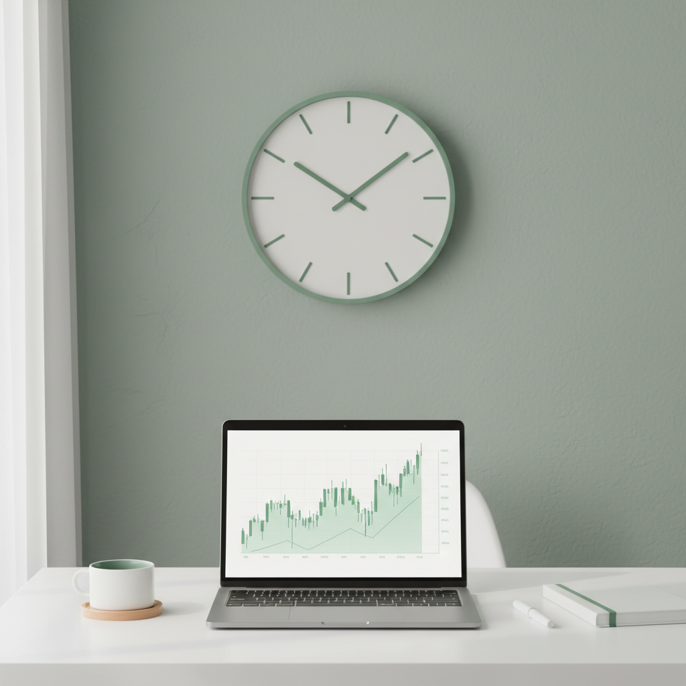

How Long Should I Spend Investing?

- Most retail investors spend far more time than they need to on active investing, and it rarely improves their returns.
- For the majority of people, 1 to 3 hours per week is the sweet spot for managing a portfolio.
- Passive strategies require almost no time and historically outperform most active investors anyway.
- The real question isn't how long you should invest, its whether your time is actually generating better returns than an index fund.
I've been actively investing for years now, and one of the biggest lessons I've learned has nothing to do with picking the right stocks. Its about time. Specifically, how much of it I was wasting.
When I first started, I was spending 10 or 15 hours a week reading earnings reports, watching market analysis on YouTube, and scrolling through investing subreddits. I thought more time meant better decisions. It didn't. And I think most people who get serious about investing fall into the same trap.
Is There a "Right" Amount of Time to Spend on Investing?
There's no universal answer here, but I'll give you my honest take: if you're a retail investor managing your own portfolio, you probably don't need more than 1 to 3 hours per week. That might sound low if you're used to spending your evenings glued to TradingView, but hear me out.
A 2024 SPIVA report from S&P Global found that over 90% of actively managed large-cap funds underperformed the S&P 500 over a 15-year period. These are professional fund managers with teams of analysts, and they still can't beat the index consistently. So the idea that you or I will do better by spending more hours researching is, frankly, a bit arrogant.
What Should Those 1 to 3 Hours Actually Look Like?
If you're going to spend time on investing, you want to make sure its high-quality time. Here's roughly how I break down my weekly investing time now:
- 30 minutes reviewing portfolio performance and checking if anything has fundamentally changed with my holdings
- 30 minutes reading macro news from sources like the Financial Times or Bloomberg, not Reddit hot takes
- 30 to 60 minutes on deeper research if I'm considering a new position or rebalancing
- 15 minutes on admin like checking dividends, tax lots, or rebalancing allocations
That's it. The rest of my time is better spent on my career, side projects, or honestly just living my life. I built this investment time tracker specifically because I wanted to see whether the hours I was putting in were actually worth it in dollar terms.
What If I Enjoy Spending More Time on It?
Look, if investing is genuinely your hobby and you enjoy the process of researching companies, reading 10-K filings, and building financial models, then go for it. I'm not saying you shouldn't. But be honest with yourself about whether that time is a hobby or a strategy. Because if you're treating it as a strategy, you need to measure whether its actually working.
I know people who spend 20 hours a week on investing and underperform someone who just puts money into a total market index fund once a month. That's not a strategy problem. That's a time allocation problem.
Does More Time Equal Better Returns?
This is the question everyone dances around, and the answer is almost always no. Research from Dalbar's Quantitative Analysis of Investor Behavior consistently shows that the average investor underperforms the market, and one of the primary reasons is overtrading. More time watching the market leads to more emotional decisions, which leads to buying high and selling low.
There's actually a strong argument that spending less time produces better results. The famous study by Barber and Odean found that the most active traders earned the lowest net returns. The investors who traded the least outperformed by a significant margin.
When Does More Time Actually Help?
There are some situations where more time is justified. If you're a value investor doing deep fundamental analysis on a small number of companies, then yes, spending 5 to 8 hours researching a single company before taking a concentrated position makes sense. Warren Buffett famously reads for 5 to 6 hours a day, but he's managing billions and has been doing this for 70 years.
For the rest of us, the diminishing returns kick in fast. You probably learn 80% of what you need to know about a stock in the first hour of research. The next 5 hours might only add another 10% of useful insight.
How to Know If You're Spending Too Much Time
Here's a simple test I use: calculate your effective hourly rate from investing. Take your total investment returns over a period, subtract what you would have earned from a passive index fund, and divide by the hours you spent. If that number is negative, or lower than minimum wage, you're spending too much time.
I've built a free tool that does exactly this calculation. You can try the Investment Time Tracker here and see how your hourly rate from active investing compares to simply buying index funds. The results are often sobering.
What About Tracking Your Investing Time?
One thing that really helped me was actually tracking how many hours I spent on investing activities. Most people have no idea how much time they're really putting in because it doesn't feel like "work." Checking your phone for stock prices while eating breakfast, reading an investing newsletter during lunch, watching market wrap-up videos before bed. It all adds up.
When I started tracking, I realized I was spending nearly double what I thought. That was a wake-up call.
My Honest Recommendation
If you're managing a portfolio under $500,000 and you're not a professional, here's what I think you should do. Set aside 1 to 2 hours per week maximum for active investing. Use the rest of your financial energy on increasing your income, reducing expenses, and automating your investments into low-cost index funds.
The best investment most people can make isn't in the stock market. It's in their own skills, career, and earning potential. Time spent getting a raise or starting a side business will almost certainly generate a higher return per hour then time spent trying to pick winning stocks.
That's not a popular opinion in investing communities, but I genuinely believe it's the truth.
Frequently Asked Questions
How many hours a week do professional traders work?
Professional day traders typically work 40 to 60 hours a week, including pre-market preparation, active trading hours, and post-market analysis. But they have dedicated infrastructure, real-time data feeds, and institutional advantages that retail investors don't have. Comparing yourself to a pro trader is like comparing a weekend jogger to a marathon runner.
Can I invest successfully with just 30 minutes a month?
Absolutely. If you're using a passive strategy like dollar-cost averaging into index funds, 30 minutes a month is more than enough. You'd set up automatic contributions and check in occasionally to rebalance. This approach has historically beaten most active investors over long time horizons.
Is it worth paying a financial advisor to save time?
It depends on your situation. If you have a complex financial picture with multiple accounts, tax considerations, and estate planning needs, a fee-only financial advisor can save you significant time and potentially improve your outcomes. For simpler situations, a robo-advisor or target-date fund achieves similar results for a fraction of the cost.
Does reading investing books count as "time spent investing"?
I'd count it partially. Reading foundational investing books is education that pays dividends forever. But if you're reading your fifth book on technical analysis hoping to find an edge, that time might be better spent elsewhere. Learning has diminishing returns too.